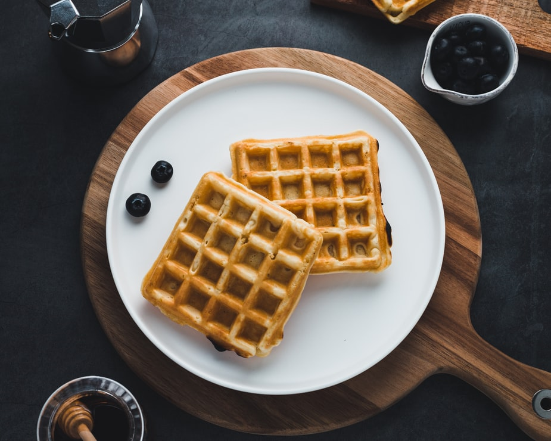

-Waffles de avena, banana y arándano-
-Avena instantánea 1 taza
-¼ taza aceite neutro
-¼ taza leche de coco
-Bananas maduras 2
-Arándanos 10
-Polvo para hornear 1 cucharada
-Endulzante a elección
Utensilios:Batidora, bowl, waflera/sartén
*Primer paso: Colocamos todos todos los ingredientes en el bowl y batimos hasta que todo se mezcle bien.
*Segundo paso: Pasamos la mezcla a la waflera, si no tienes puedes ponerlo en un sartén.
